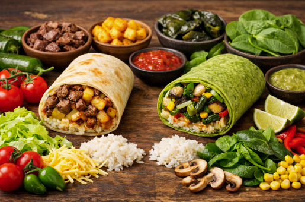
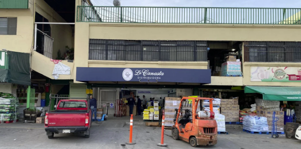

Producto y Calidad
Especificaciones del Producto
Nuestro producto consiste en burritos artesanales preparados al momento, diseñados para ofrecer una opción alimenticia rápida, accesible y de alta calidad. Elaborados con tortilla de harina de trigo o de espinaca, cada burrito combina ingredientes frescos y balanceados en dos líneas de menú: tradicional, como papas con bistec, y vegetariana, como chile poblano con vegetales. Cada pieza mantiene una proporción óptima en donde el 60% del guiso principal contiene proteínas ya sea la opción tradicional o la opción vegetariana, el 30% de vegetales son frescos como la espinaca, lechuga, y 10% de complementos como arroz y salsas artesanales, logrando así un equilibrio ideal entre sabor y valor nutricional.

Materia Prima
La materia prima está estructurada para garantizar la disponibilidad y cubrir la demanda exacta, para esto se requieren 7 paquetes grandes de tortilla harina blanca de 24 piezas cada uno (para la línea tradicional) y 9 paquetes de tortilla harina con espinaca de 10 piezas cada uno (para la línea saludable). Proteínas y Leguminosas Se utilizan 6.5 kg de bistec de res magra, 5 kg de chicharrón y 8 kg de frijoles peruanos (peso seco). El volumen y frescura se complementan con 9 kg de tomate, 13 kg de papas, 10 kg de cebolla, 4 kg de chile poblano, 4 kg de pepino, 3 kg de zanahoria, 5.5 kg de espinacas y 6 lechugas iceberg, destacando estas últimas en la línea saludable. Lácteos, Grasas y Sabor Incluye 4 kg de queso manchego, 2 litros de aceite vegetal, 2 litros de aceite de oliva, 1 galón de aderezo ranch y 4 litros de salsa verde. El sabor se define por una mezcla de ajo, sal, especias (pimienta, comino, orégano, páprika) y variedad de chiles (árbol y guajillo), bajo estándares de alta calidad para ambos segmentos de clientes.

Selección de Proveedores
"La Canasta", ubicado en Blvrd Federico Benítez López, Yamille, 22114 Tijuana, B.C. (Tel: +52 664 496 1271). Este distribuidor nos abastecerá de manera integral tanto los productos de abarrotes como las carnes necesarias para la operación.
